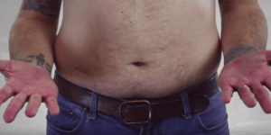
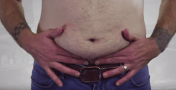
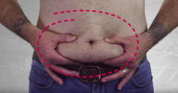

Sponsored Article is ROK's official account that publishes sponsored articles from advertisers. If you are interested hiring a sponsored article for your site, product, or service, visit our advertising page.


The following article was sponsored by Jonny Catanzano
[Jonny paid for the First 100 readers to receive a free bonus gift. Be sure to read to the end to find out how to claim your bonus.]
Hey man,
My name is Jonny Catanzano and I’ve been a National Physique Competitor for the last 4 years. I’m also the lead trainer on the most subscribed fitness channel on YouTube.
Throughout my years of training, I’ve definitely picked up on a trick or two when it comes to shedding body fat and building pure, ripped muscles.
And one of the biggest things that I’ve learned about keeping your body fat percentage as low as possible, is that you have to control your master fat loss hormone, leptin.
Leptin tells your body to burn more fat. When you have a lot of it… you burn a lot of fat, and when you have low leptin levels (or you only have a little bit of it…) you burn little to no fat.
You probably have low leptin levels right now and don’t even realize it; I certainly did.
And if you are unsure if your leptin levels are high or low, then simply try this out. I call it…
This is something I have all my personal clients do and is a very important part of how you’ll be able to get rid of that belly fat. I want you to open up both of your hands, reach down and slip your fingers just right under the belly fat that hanging over the waistline of your pants.
Go ahead…


Now with your thumb squeeze down gently… give it a firm squeeze.

You did it, right?
Now like most guys that I have helped, you’re probably holding onto something that’s been bothering you for a while. You may even be a bit shocked to notice that there’s quite a bit more belly fat than you expected…
But you’re not the only one, because just like you, the majority of all men are carrying around this same kind of belly fat that’s taking over their stomach area.
And if you’re holding onto this belly fat, more than likely… you have pretty low leptin levels, but it’s not your fault.
So the bottom line is if you want to burn the most amount of fat, you want your leptin levels to be high.

So what exactly is leptin and why should you care about it if you want to burn fat, get ripped six pack abs, and not have to worry about shedding the MAX amount of stubborn fat?
Well, first of all this powerful hormone is the #1 most important fat burning hormone.
And you have probably heard of another hormone named insulin that is responsible for fat gain—or as the “flab king” that packs on extra pounds.
But how are the two related? Well, they are actually complete opposites.
You see, insulin is released in your body when you eat food, particularly ones that are high in sugar… and insulin turns that food into fat. On the other hand, leptin allows your body to actually use energy from the fat you already have on your body.
You starting to see the difference?
The more fat you have on your body, the more leptin that will be available so you can burn off that fat.
However, as you begin to burn off fat, your leptin decreases… so it becomes harder to burn off unwanted body fat and you start storing more fat as your leptin levels decrease.
Bottom line: as you lose more fat, your leptin goes down and makes it more difficult for you to shed the fat. On top of that, lower leptin levels also make you feel sluggish and unmotivated—or lazy.
So if you’ve started seeing slower results with your workouts, been feeling sluggish, held a lot of fat in your hands on the belly fat test, or suffer from a bad diet, low leptin levels could be the reason.
That means you can start burning fat today by taking control of your #1 master fat loss hormone.
Now, I say suffering from a bad diet, because it’s very, very hard to maintain a perfect diet. And dieting is hard… trust me.
When I compete, I have to stay on a very strict diet, and I still have a hard time keeping my body fat percentage down. That’s why I do this 2x daily to accelerate fat loss.
So if you have been dieting but not seeing results fast enough—it could simply be because your leptin levels are too low.
And like I just said, leptin becomes even more of an issue when you stop losing fat even though you are dieting and exercising on a regular basis… and it’s just because these levels are too low.
However, this 2x Daily For Accelerated Fat Loss technique reignites your leptin and kick your body back into fat burning mode in no time.
So if you have hit a wall and you’re ready to kick your fat loss into high gear… and you have been doing everything you can to lose fat. THIS could put you back on track to getting the body you want.
Shed the fat,
Jonny
P.S. The first 100 readers of this article receive a free bonus gift. Act fast though, because I run out quick!